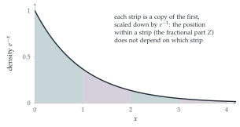

The continuous random variable \(X\) has probability density function \[\mathrm{f}(x) = \begin{cases} \lambda e^{-\lambda x} & \text{for } x \geq 0, \\ 0 & \text{otherwise,} \end{cases}\] where \(\lambda\) is a positive constant. The random variable \(Y\) is the greatest integer less than or equal to \(X\), and \(Z = X - Y\).
Show that, for any non-negative integer \(n\), \(\mathrm{P}(Y = n) = (1 - e^{-\lambda})e^{-n\lambda}\).
Show that \(\mathrm{P}(Z < z) = \dfrac{1 - e^{-\lambda z}}{1 - e^{-\lambda}}\) for \(0 \leq z \leq 1\).
Evaluate \(\mathrm{E}(Z)\).
Obtain an expression for \(\mathrm{P}(Y = n \text{ and } z_1 < Z < z_2)\), where \(0 \leq z_1 < z_2 \leq 1\) and \(n\) is a non-negative integer. Determine whether \(Y\) and \(Z\) are independent.
The hook
A radioactive atom has been sitting in a laboratory for a million years without decaying. Is it “due” to decay soon? No: its chance of decaying in the next second is exactly the same as that of a freshly made atom. Radioactive atoms do not age. The waiting time until decay has the exponential distribution, and its defining property is that it has no memory.
This question shows the memorylessness in a striking form. Split an exponential waiting time into its whole number of units and its fractional part. These two pieces turn out to be independent: knowing how many whole hours you waited tells you nothing about the minutes. The question also explains, in the exercises, why your wait for a bus can seem longer than the gap between buses.
Before you start
What is \(\mathrm{P}(X > x)\) for \(x \geq 0\)? What is \(\mathrm{P}(X > s + t \mid X > s)\)?
\(\mathrm{P}(X > x) = \int_x^\infty\lambda e^{-\lambda u}\,\mathrm{d}u = e^{-\lambda x}\). Then \(\mathrm{P}(X > s + t \mid X > s) = \frac{e^{-\lambda(s + t)}}{e^{-\lambda s}} = e^{-\lambda t} = \mathrm{P}(X > t)\): having already waited \(s\), the remaining wait has the same distribution as a fresh one. This is the memoryless property.
Working it through
Stage 1 The whole part
\(Y = n\) exactly when \(n \leq X < n + 1\): \[\mathrm{P}(Y = n) = e^{-\lambda n} - e^{-\lambda(n + 1)} = (1 - e^{-\lambda})e^{-n\lambda}. \qed\] So \(Y\) has a geometric distribution: each whole unit is “survived” with probability \(e^{-\lambda}\).
Stage 2 The fractional part
\(Z < z\) means \(X\) lies in one of the intervals \([n, n + z)\). Add up their probabilities.
\[\mathrm{P}(Z < z) = \sum_{n \geq 0}\bigl(e^{-\lambda n} - e^{-\lambda(n + z)}\bigr) = (1 - e^{-\lambda z})\sum_{n \geq 0}e^{-\lambda n} = \frac{1 - e^{-\lambda z}}{1 - e^{-\lambda}}. \qed\]
Stage 3 The mean of \(Z\)
For a random variable on \([0, 1]\), \(\mathrm{E}(Z) = \int_0^1\mathrm{P}(Z > z)\,\mathrm{d}z\). Use it.
With \(c = 1 - e^{-\lambda}\), \(\mathrm{P}(Z > z) = 1 - \frac{1 - e^{-\lambda z}}{c}\), so \[\mathrm{E}(Z) = 1 - \frac1c\Bigl(1 - \frac{1 - e^{-\lambda}}{\lambda}\Bigr) = 1 - \frac1c + \frac1\lambda = \frac1\lambda - \frac{e^{-\lambda}}{1 - e^{-\lambda}} = \frac1\lambda - \frac{1}{e^\lambda - 1}. \qed\] (For small \(\lambda\), long waits, this tends to \(\frac12\): the fractional part is nearly uniform. For large \(\lambda\) it is close to \(\frac1\lambda\), because \(X\) is almost always less than \(1\).)
Stage 4 Independence
\[\mathrm{P}(Y = n, z_1 < Z < z_2) = \mathrm{P}(n + z_1 < X < n + z_2) = e^{-\lambda n}\bigl(e^{-\lambda z_1} - e^{-\lambda z_2}\bigr).\]
Compare with \(\mathrm{P}(Y = n)\,\mathrm{P}(z_1 < Z < z_2)\), using parts (i) and (ii).
From (i) and (ii), \(\mathrm{P}(Y = n)\mathrm{P}(z_1 < Z < z_2) = (1 - e^{-\lambda})e^{-n\lambda}\cdot\frac{e^{-\lambda z_1} - e^{-\lambda z_2}}{1 - e^{-\lambda}}\), which is the same. So \(Y\) and \(Z\) are independent.■

Looking back
Sum over pieces. Both the distribution of \(Z\) and the joint probabilities came from adding probabilities over the intervals \([n, n + 1)\).
The tail formula. \(\mathrm{E}(Z) = \int\mathrm{P}(Z > z)\,\mathrm{d}z\) avoided finding the density.
Factorisation means independence. The joint probability split into a function of \(n\) times a function of \(z_1\), \(z_2\).
What’s really going on
Why the exponential is special
The independence of \(Y\) and \(Z\) comes straight from \(e^{-\lambda(n + z)} = e^{-\lambda n}e^{-\lambda z}\), and that is the memoryless property in disguise. In fact the exponential is the only continuous distribution without memory: if \(\mathrm{P}(X > s + t) = \mathrm{P}(X > s)\mathrm{P}(X > t)\) for all \(s, t \geq 0\), then \(g(t) = \ln\mathrm{P}(X > t)\) satisfies \(g(s + t) = g(s) + g(t)\), and (for a monotonic \(g\)) this forces \(g(t) = -\lambda t\). That is why the exponential models waiting times for events that happen “at random”, with no build-up: radioactive decays, the arrival of customers, the failure of electronic components that do not wear out.
Minima and the waiting-time paradox
If \(X_1\) and \(X_2\) are independent exponentials with rates \(\lambda_1\) and \(\lambda_2\), then \(\mathrm{P}(\min > x) = e^{-\lambda_1x}e^{-\lambda_2x}\), so the minimum is exponential with rate \(\lambda_1 + \lambda_2\). Waiting for the first of two independent random events is like waiting for one event at the combined rate (STEP III 2002 Q13, in the exercises). Memorylessness also explains the waiting-time paradox: if buses arrive at random with an average gap of \(10\) minutes, then a passenger arriving at a random time waits on average \(10\) minutes, not \(5\), because the remaining wait is memoryless; and the gap they arrive in is on average \(20\) minutes long, since long gaps are more likely to be landed in.
In 1910 Ernest Rutherford and Hans Geiger counted the alpha particles emitted by a radioactive source in intervals of \(7.5\) seconds, and found that the counts followed the Poisson distribution, as the mathematician Harry Bateman showed they should if the emissions occurred independently at a constant rate. The times between emissions are then exponential. The Poisson process, a stream of events with exponential gaps, is now the basic model of randomness in time, used for telephone calls, insurance claims and the firing of neurons; the next section, Section 12.19, extends it to space.
The thinking skill
Two random variables are independent if their joint probabilities factorise into a function of one times a function of the other.
At university, factorisation of a joint density is the standard test for independence, and it is how you will recognise independent components in multivariate problems, such as the radius and angle of a normally distributed point in Section 12.22.
Try this next
Two bus routes. (From STEP III, 2002.) Show that the minimum of independent exponentials with parameters \(\lambda_1\) and \(\lambda_2\) is exponential with parameter \(\lambda_1 + \lambda_2\). Buses on route A and route B have exponential gaps with means \(15\) and \(30\) minutes, independently. Having just seen one of each leave, show that the median wait for the next bus is about \(7\) minutes.
Memoryless discrete. Show that the geometric distribution is memoryless: \(\mathrm{P}(Y \geq m + n \mid Y \geq m) = \mathrm{P}(Y \geq n)\).
The waiting-time paradox. Buses arrive as a Poisson process with rate \(\lambda\). Show that the gap containing a fixed time \(t\) (for large \(t\)) has expected length \(\frac2\lambda\), twice the average gap.
The density of \(Z\). Find the probability density of \(Z\), and sketch it for \(\lambda = 1\) and \(\lambda = 5\).
Further reading
Geoffrey Grimmett & Dominic Welsh, Probability: An Introduction (Oxford University Press), on the exponential distribution and the Poisson process.
Sheldon Ross, Introduction to Probability Models (Academic Press). Exponential distributions, Poisson processes and queues.
David Spiegelhalter, The Art of Uncertainty (Pelican). Randomness and waiting in everyday life.